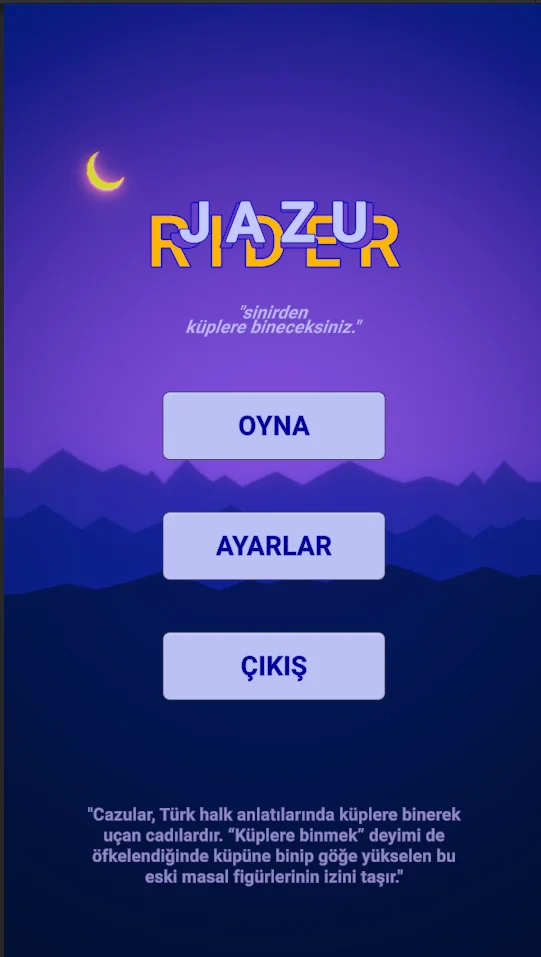
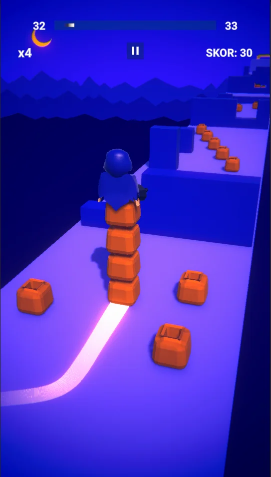
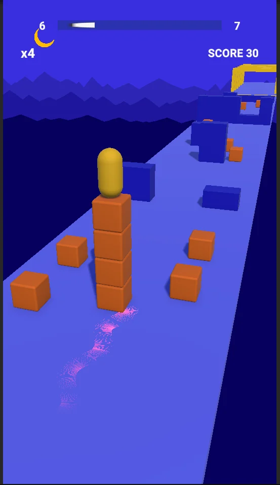
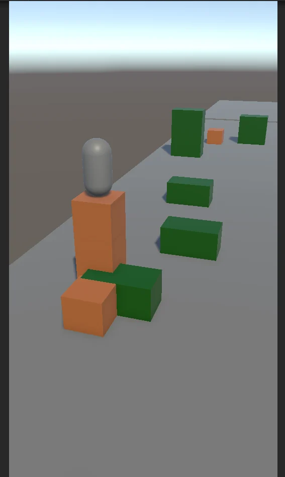
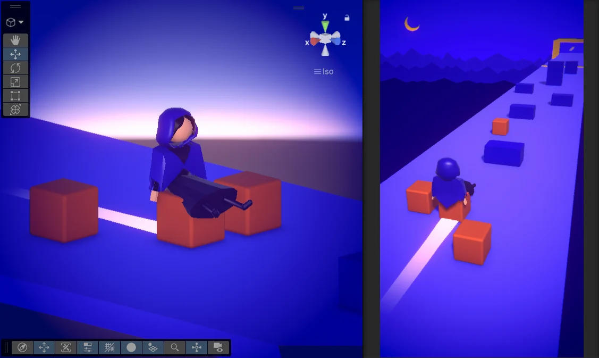
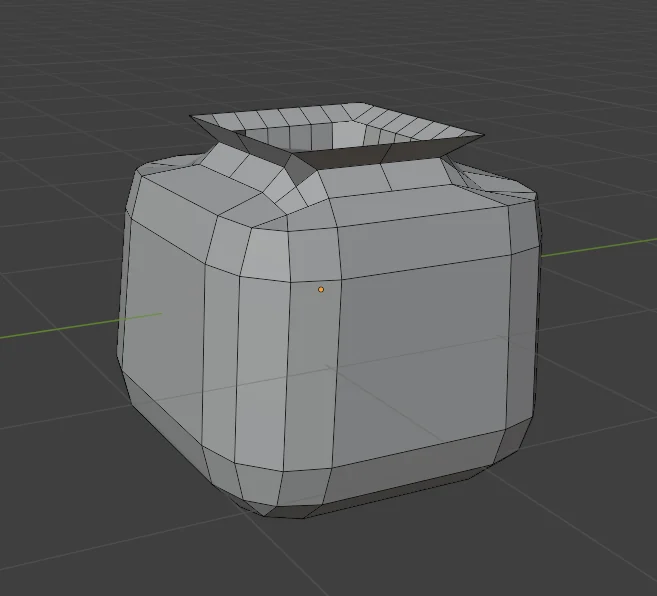
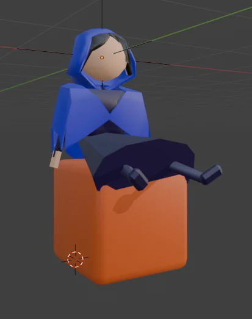
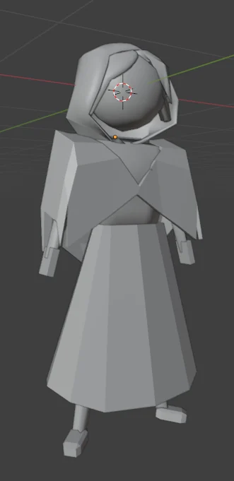

dinamik kavanoz yığını
- Toplanan kavanoz sayısına göre büyüyen stack
- Karakterin yığının üstünde konumlanması
- Engel çarpışmalarında stack kaybetme
- Değişen yüksekliğe göre hareketin güncellenmesi
Cazu'yu küp kulesinin tepesinde parkur boyunca sür; engellerden kaç, kuleyi büyüt ve bitişe en yüksek çarpanla gir.
Upperpik stajındaki ikinci mobil hypercasual projem. Fikir bir deyimden çıktı: eskiden kavanoza küp denirdi ve halk inanışına göre cadılar küplere binip uçardı. Öfkeden kudurana bugün hâlâ 'küplere bindi' dememiz oradan geliyor. Ben de Cube Surfer tarzı yığın mekaniğini bu hikâyeyle buluşturdum. Cadımız Cazu, üst üste dizdiği küplerin tepesinde parkuru aşıyor; engeller kuleyi kısaltıyor, topladığın küpler yeniden uzatıyor. Hedef bitişe olabildiğince yüksek bir küp kulesiyle varmak. Küplerin içinde ne olduğunu da sormayın; Cazu'yu küplere bindirmeyelim.
Asıl uğraştığım kısım yığının kendisiydi: kavanozların dinamik davranışı, engel çarpışmaları, karakterin kulenin tepesindeki hareketi, takip kamerası ve fizik hissi. Temel mekanikler oturduktan sonra bounce, kavanozların gecikmeli sallanması, trail, animasyon, ses, post-processing ve color grading ile oyuna hareket ve atmosfer kattım.
DiveAlamut'ta oyunun omurgasını kurmayı öğrendikten sonra JazuRider'da işin his tarafına yüklendim: dinamik obje yığınları, kamera takibi, fizik, animasyon ve polish. Kule tek parça bir blok gibi değil, her kavanozu küçük gecikmelerle tepki veren canlı bir yığın gibi hareket etsin istedim. Sonuç çok daha doğal ve izlemesi keyifli oldu.
Önce oyunun son hali, sonra cadının henüz sarı bir kapsül olduğu günler ve gri kutulu ilk prototip. En sonda küpün ve cadının Blender'daki halleri. Görsellere tıklayınca büyüyor.







